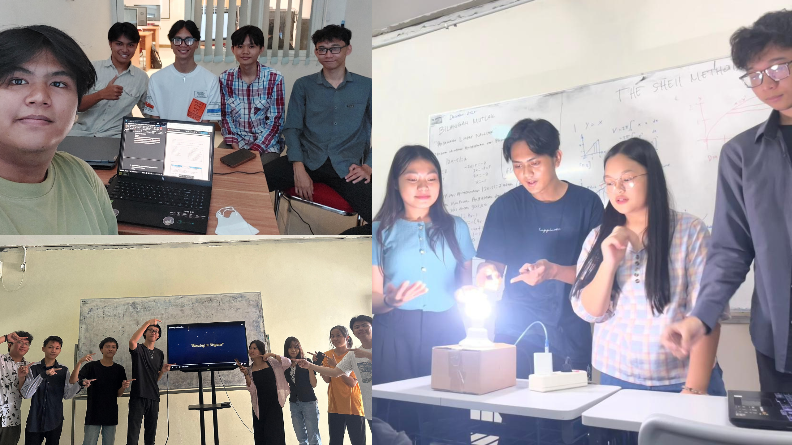

Awal Kehidupan Kampus & Kolaborasi

Jujur, saya bukan tipe orang yang mudah memulai percakapan. Dunia perkuliahan menuntut saya untuk mulai mengambil langkah yang lebih berani, meskipun itu hanya langkah kecil sekalipun. Tapi saya beruntung karena di awal perjalanan ini, saya dipertemukan dengan teman-teman yang jauh lebih engaging dari saya. Keberadaan mereka membuat saya merasa bahwa lingkungan kampus tidak sehoror yang saya bayangkan sebelumnya.
Tapi saya kemudian menyadari satu hal, yaitu saya tidak bisa jika hanya bergantung pada mereka. Di dunia perkuliahan, tidak ada jaminan kamu akan sekelas atau sekelompok dengan orang yang sama setiap semesternya. Setiap mata kuliah bisa membawa kelompok yang berbeda, wajah-wajah baru yang belum pernah kamu ajak bicara sebelumnya. Dan itulah yang terjadi pada saya. Mau tidak mau, saya harus mulai belajar untuk berbaur sendiri. Prosesnya tidak mudah dan jujur agak berat di awal, tapi perlahan saya menemukan cara saya sendiri untuk beradaptasi.
Soal kolaborasi, yang dalam kasus ini berupa tugas kelompok, saya punya cerita tersendiri. Saya sadar betul bahwa kemampuan saya masih banyak kekurangannya, tapi satu hal yang saya pegang, yaitu saya tidak mau jadi anggota kelompok yang hilang ditelan bumi 😅. Walaupun kontribusi saya tergolong sangat kecil, saya akan berusaha untuk hadir. Karena sepikir saya, menghilang tanpa kabar itu bisa jadi hal yang meresahkan saat ditemui. Tapi ada kebiasaan lain yang belakangan saya sadari perlu saya ubah. Kalau saya merasa sebuah tugas kelompok itu bisa saya kerjakan sendiri, meskipun banyak sekalipun, saya cenderung akan mengerjakannya terlebih dahulu, lalu menyerahkan hasilnya ke anggota lain untuk dipelajari atau direvisi seperlunya. Niatnya memang baik, tapi saya tahu ini bukan cara yang benar. Dunia kerja nanti tidak menilai seberapa banyak yang bisa kamu kerjakan seorang diri, melainkan seberapa baik kamu bisa berkolaborasi dan tumbuh bersama tim.
Mengubah kebiasaan ini tidak mudah. Kadang masih ada dorongan lama yang muncul, tapi saya berusaha, sedikit demi sedikit, untuk belajar berbagi porsi, belajar mempercayakan bagian tertentu kepada orang lain, dan belajar bahwa kolaborasi yang sesungguhnya bukan soal siapa yang paling banyak berkontribusi, tapi soal bagaimana sebuah tim bisa saling melengkapi dan tumbuh bersama.
Perjalanan ini masih panjang. Tapi saya sedang berusaha. Di sisi akademik maupun sosial kampus, untuk terus berkembang menjadi versi diri yang lebih baik dari sebelumnya.